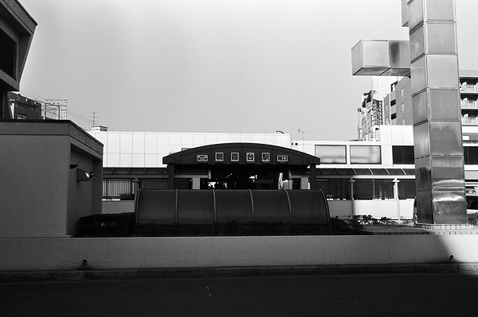
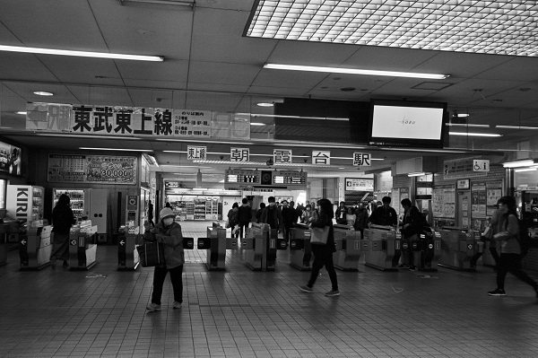
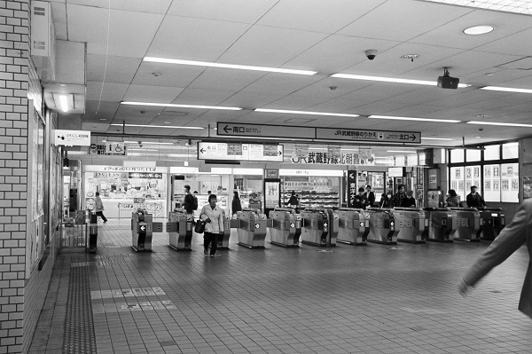
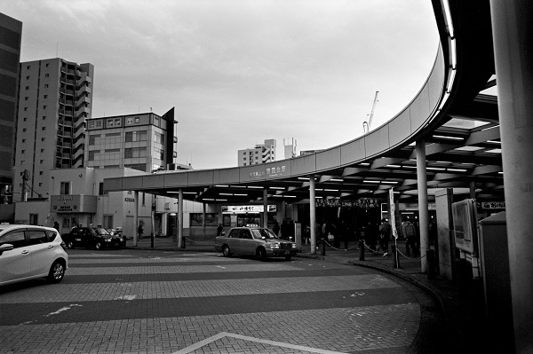
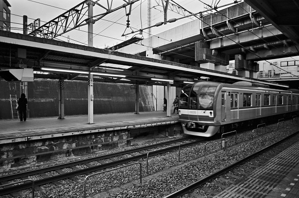
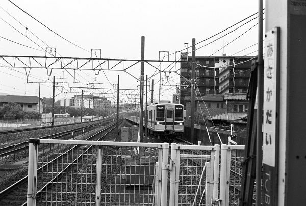
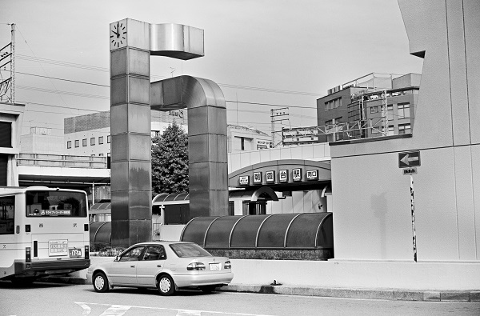

朝霞台駅 Asakadai
朝霞駅←← 東武東上線 →→ 志木駅
JR武蔵野線 乗換 JR北朝霞駅

2019/4/4 ﾍｷｻｰRF＋ｽﾞﾐｸﾛﾝ35mm ｱｸﾛｽ

2019/4/4 ﾍｷｻｰRF＋ｽﾞﾐｸﾛﾝ35mm ｱｸﾛｽ

2019/4/4 ﾍｷｻｰRF＋ｽﾞﾐｸﾛﾝ35mm ｱｸﾛｽ

2019/2/24 ﾍｷｻｰRF 25mm ｱｸﾛｽ

2019/2/24 ﾍｷｻｰRF 25mm ｱｸﾛｽ

2018/4/23 ﾛｰﾗｲ35 ｱｸﾛｽ

2018/3/24 DP1

2017/4 ﾛｰﾗｲ35 Acros

2017/4 ﾛｰﾗｲ35 Acros

2016/11 PentaxSP Tessar2.8/50 Acros

2010/5